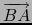

suivant: L'ordonnée d'un point ou
monter: Les mesures
précédent: L'affixe d'un point ou
Table des matières
Index
L'abscisse d'un point ou d'un vecteur : abscissa abscisse
Voir aussi : 10.11.1 pour la géométrie 3D.
abscisse, en géométrie plane, est une fonction ayant
comme argument un point ou un vecteur ou un nombre complexe.
abscisse renvoie l'abscisse du point ou du vecteur :
- si le point A a pour coordonnées cartésiennes (xA, yA),
abscisse(A) renvoie xA,
- si le point B a pour coordonnées cartésiennes (xB, yB),
abscisse(A-B) renvoie xA - xB (car A-B désigne
le vecteur
).
On tape :
abscisse(point(1+2*i))
On obtient :
1
On tape :
abscisse(point(i)-point(1+2*i))
On obtient :
-1
On tape :
abscisse(1+2*i)
On obtient :
1
On tape :
abscisse([1,2])
On obtient :
1
Documentation de giac écrite par Renée De Graeve